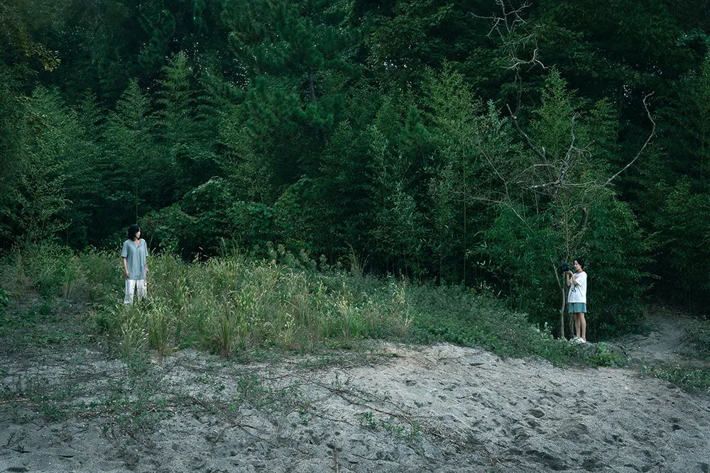
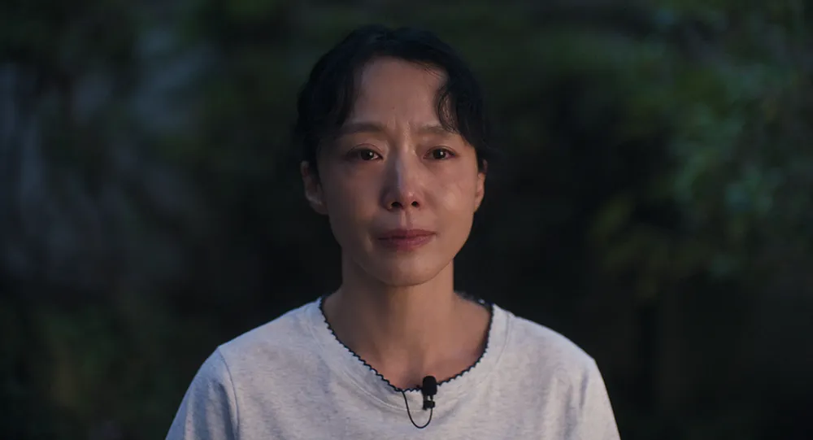
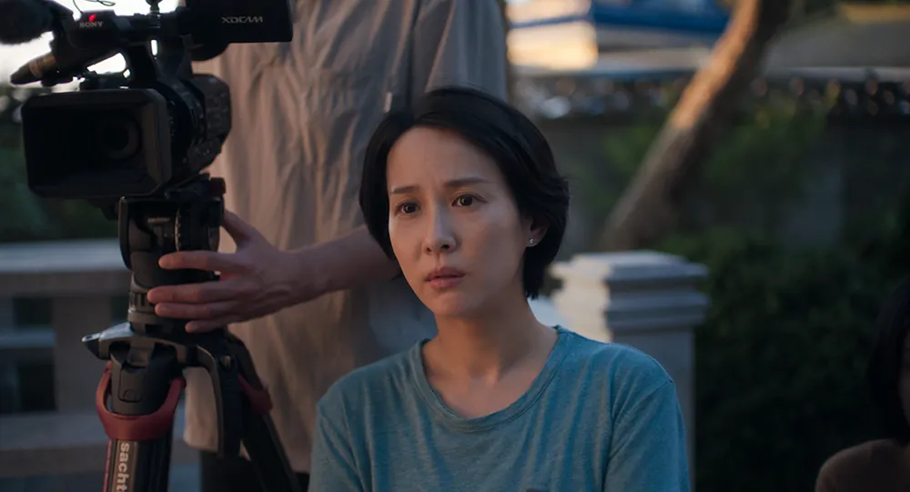

“노동이 사라져 가는 시대에, 사람과 사람 사이의 관계가 끊어져 가는 시대에 영화로 무엇을 할 수 있는지, 영화가 무엇을 해야만 하는지 질문하기 위해 이 영화를 만들었다.” 올해 베니스국제영화제에서 은사자상(심사위원대상)을 수상한 직후 얘기한 이창동 감독의 소감이다. 이후 귀국해 열린 기자 간담회에서는 “타인의 고통을 소비하지 않고, 그냥 영화를 만들기 위한 재료로 사용하지 않고, 그들의 이야기를 담아낼 수 있을 것인가, 하는 것은 평생 해 온 질문”이라고 말했다. 이창동 감독이 각각 베니스와 서울에서 얘기한 <가능한 사랑>의 두 개의 주제는 바로 우리 세계를 지탱하는 노동과 영화의 윤리에 관한 질문이다. 이창동 감독이 특히 <버닝>(2018) 이후 8년 만에 만든 작품이자, 칠순의 나이를 지나 7번째 장편영화인 <가능한 사랑>에 이르러 ‘창작자의 윤리’를 언급하며 자기 반영적인 작품을 만든 것은 실로 경이롭다.
사라지는 노동자를 향한 이창동의 부채의식
해고 노동자 호석(설경구)과 아내 미옥(전도연), 그들에게는 소중한 아들 철(정섶)이 있다. 호석은 파업 당시 겪었던 트라우마를 아직 극복하지 못했고, 미옥은 마스크 공장에 다니며 생계를 유지하고 있다. 한편, ‘사라지는 노동자, 노동이 곧 삶이다’라는 주제로 다큐멘터리를 촬영하고 있는 예지(조여정)는 호석과 미옥에 대한 인터뷰를 요청하며 그들과 가까워진다. 예지의 남편 상우(조인성)도 종종 아내의 일을 도우며 그들 가족과 친해진다. 다큐멘터리 촬영에 적극적인 미옥과 예지는 서로 말을 나누며 친한 친구가 되지만, 다른 해고 노동자 동료들과 달리 심리치료도 거부하고 있는 호석은 여전히 인터뷰에 나서는 것을 망설인다. 그런 그들이 상우의 별장으로 함께 휴가를 떠나게 되고, 서로의 다른 삶과 숨은 욕망을 마주한다.
이창동 감독은 10여 년 전 실제로 대기업의 대량 해고와 파업, 강제 진압 사건을 영화화하려다 중단한 적 있다. 인터뷰에서 밝힌 바에 따르면, “내가 그 이야기를 정직하게 할 수 있는 자격이 있는지, 내가 그들에게 얼마나 가까운지에 대한 확신이 없었기 때문”에 만들어지지 못했다. 당시의 고민은 <가능한 사랑>에서 다큐멘터리를 만드는 예지 캐릭터에 녹아 있다고 할 수 있는데, 그 제작 과정 자체가 164분에 달하는 상영 시간의 절반 이상을 차지하고 있다. 예지가 인터뷰하고 취재하는 내용이 그대로 담겼고, 그를 통해 앞서 이창동 감독 영화에서 보기 힘들었던 플래시백도 상당 분량 담겼으며, 무엇보다 심리치료를 받는 해고 노동자들의 이야기와 함께 용기 내어 카메라 앞에 선 호석의 인터뷰도 담겼다. 즉, 노동자들의 이야기 그 자체를 최대한 있는 그대로 담고 싶다는 바람일 것이다.
<가능한 사랑>에서는 플래시백 영상은 물론 과거의 기억을 떠올리며 ‘옥쇄파업’이라는 표현을 여러 번 쓴다. 노조원들이 공장 문을 봉쇄하고 공장에서 숙식을 해결하는 형태의 파업을 그렇게 지칭하는데, 2009년 5월 22일부터 8월 6일까지 쌍용자동차 노조원들이 무려 총인원 36%에 달하는 사측의 인력 감축 구조조정 단행에 반발하여 평택공장에서 벌인 총파업 및 점거 투쟁이 가장 잘 알려져 있다. 영화에서는 호석이 다니던 직장이 ‘SP중공업’으로 나오는데, 잦은 산업 재해로 악명 높은 SPC그룹도 연상시킨다. 그런데 공장 후배들을 ‘동생’이라 부를 정도로 회사에 대한 애정이 남달랐고, 용접공이라는 자부심으로 아들의 이름마저 ‘철’로 지은 호석이었기에, 영화에서 그가 쌍용자동차의 SUV 즉 자신의 ‘회사 차’인 코란도를 타고 다니는 것은 거의 눈물 날 정도로 자연스럽다. 물론 SP중공업으로 설정돼 있긴 하나, 쌍용자동차의 옥쇄파업을 말하는 게 너무나도 명확하다. 말하자면 <가능한 사랑>은 영화의 화법 자체가 이전 이창동 영화와 달리 굉장히 ‘직설적’이다. 영화 속 콘텐츠 제작 지원 심사 자리에서 예지는 자신의 작품을 프레젠테이션하며 “다큐멘터리야말로 가장 강력한 스토리텔링 도구”라고 말하는데, <가능한 사랑>이라는 극영화의 ‘추구미’ 또한 그렇다.


가장 아름다운 순간과 고통스러운 순간의 화해는 가능한가
이창동 감독의 5번째 장편영화 <시>(2010)에서 미자(윤정희)가 다니는 문화센터의 시 창작교실에서, 수강생들이 한 명씩 차례로 자신의 ‘가장 아름다웠던 순간’을 이야기하는 장면이 있다. 배우의 연기라기보다 실제 일반인을 인터뷰한 다큐멘터리처럼 보이는 장면인데, 허구와 현실의 경계가 흐려지며 저마다 자기 인생에서 잊히지 않는 아주 사적인 순간을 이야기한다. 그 장면은 <가능한 사랑>에서 심리치료를 받겠다고 결심한 호석이, <시>의 그 장면과 마찬가지로 비직업 배우들로 보이는 다른 사람들의 이야기를 듣는 장면과 굉장히 닮아 있다. 아니, 닮은 것 이상으로 의도적이라고 할 만큼 같은 방식으로 연출한 장면이다. 그런데 이번에는 한 명씩 차례로 ‘파업으로 인한 해고 이후 가장 힘들었던 순간’을 이야기한다. 구조조정 당시 계속 회사에 남게 된 ‘산 자’가 아니라, 회사를 떠난 ‘죽은 자’들인 그들은 엘리베이터에서 산 자를 만났을 때 얼마나 괴로운지, 당당하게 자신의 주장을 펼쳤음에도 ‘빨갱이’라고 몰리는 순간을 얘기하며, 고통의 순간을 나눈다.
<시>와 <가능한 사랑> 모두 비직업 배우처럼 보이는 이들을 캐스팅해 유사한 장면을 연출하며, 그것이 개인의 이야기인 동시에 집단의 이야기처럼 보이게끔 만든다. 결국 그 모든 일이 우리 모두에게 일어날 수 있는 삶의 순간일 수 있다. 서두에서 “노동이 사라져 가는 시대에, 사람과 사람 사이의 관계가 끊어져 가는 시대에 영화로 무엇을 할 수 있는지, 영화가 무엇을 해야만 하는지 질문하기 위해” <가능한 사랑>을 만들었다는 얘기가 바로 그렇게 담긴다. 어쩌면 10여 년 전 준비하던 영화를 끝내 완성하지 못한 부채의식 때문일까, 노동하는 사람들의 진솔하고 내밀한 삶의 이야기를 그리겠다는 이창동 감독의 다짐이 바로 그 장면에 담겼다. <시>의 시 창작교실과 <가능한 사랑>의 심리치료 센터는 결국 같은 곳이다. 우리 삶은 <시>처럼 아름답기도 하고 <가능한 사랑>처럼 고통스럽기도 하다. 그렇게 우리의 삶은 계속된다.


그러한 부채의식과 다짐은, 아마도 이창동 감독의 분신으로 여겨지는 예지 캐릭터에 오롯이 담겼다. 역시 서두에서 얘기한 또 다른 주제인 “타인의 고통을 소비하지 않고, 그냥 영화를 만들기 위한 재료로 사용하지 않고, 그들의 이야기를 담아낼 수 있을 것인가” 하는 그의 평생의 질문이 예지의 다큐멘터리 제작 과정에 담긴다. 호석의 개별 인터뷰를 기어이 따내고자 하는 욕망을 감추지 못하는 예지는, 그를 ‘특별한’ 사람이라 생각한다. 다른 해고 노동자들과 달리 마지막 순간까지 자기 얘기를 꺼내지 않으려는 호석을 보면서 그렇게 여기는 것 같은데, 그런 그를 특별하게 생각하는 것은 결코 거짓이 아닐 것이다. 다만 그 특별함이 내 작품에만 담기길 바라는 연출자의 독점욕일 것이다.
호석이 특별하다는 얘기에 대해 상우는 “그(호석) 역시 뻔한 해고 노동자일 수도 있을 것”이라 말한다. 또한 미옥과 친구처럼 허물없이 반말하며 지내는 모습을 보고서는, 어느 정도 칭찬의 의미로 “메소드 연기를 잘하고 있다”고 말한다. 한없이 상우를 아끼고 사랑하는 예지이지만, 그 ‘메소드 연기를 하고 있다’는 표현 앞에서는 얼마간 ‘긁힌다’. 그리고 “나는 그 사람들을 사랑하려는 거야”라고 말한다. <가능한 사랑>이라는 아리송한 제목이 바로 거기서 유래한다. 예지처럼 이창동 감독 역시 연출자로서 피사체와의 사랑이 가능하다는 자기 최면 속에서 살아왔다는 고백이 아닐까. 세상 모든 예술가가 알면서도 눙치며 살아온 모든 것들에 대한 반성이랄까. 그가 칠순이 지난 나이에, 과작(寡作) 7번째 장편영화를 내놓으며 그런 전면적인 자기 반영의 영화를 만들었다는 것이 놀랍다.


사실주의와 표현주의 사이, 경이로운 혁신
서두에서 얘기한 두 주제를 초월해 <가능한 사랑>이 놀라운 것은, 영화의 후반부에 있다. <버닝> 이후 8년 만의 영화이자, 7번째 장편영화에 이르러 이창동 감독의 영화적 문법과 화법이 달라졌다는 인상은 두 가족이 상우의 별장으로 함께 휴가를 떠나는 순간부터 새로운 차원으로 진입한다. 별장 2층 집의 지하실이 단순히 봉준호 감독 <기생충>(2019)을 연상시킨다는 것을 넘어, 한국영화에서 그 2층 집에 들어선 것은 계급과 욕망이 뒤엉키는 <하녀>(1960)로 대표되는 김기영 감독의 세계에 당도한 것을 의미한다. 평소 표현주의 계열의 김기영 감독을 존경하는 것으로 유명한 박찬욱, 봉준호 감독과 달리 <오발탄>(1961)으로 대표되는 사실주의 계열의 유현목 감독과 가깝다고 여겨져 온 이창동 감독이었기에 실로 놀라운 순간이다. 봉건사회가 아닌 현대사회의 그 ‘하녀’ 캐릭터는 이들 예술가가 바라보는 한국 사회의 계급 문제라는 관점에서 굉장히 중요한 설정이다. 박찬욱 감독의 경우 이른바 ‘복수 3부작’ 이후 만든 태주(김옥빈)의 <박쥐>(2009), 숙희(김태리)의 <아가씨>(2016), 서래(탕웨이)의 <헤어질 결심>(2022)을 ‘하녀 3부작’이라고 칭할 수 있을 정도고, 봉준호 감독 <기생충> 또한 박사장(이선균) 집에서 살아가는 서로 다른 두 집단의 하인 가족들이 대립하는 이야기였다. <가능한 사랑>에는 바로 그 별장에 ‘하인’이라 부를 만한 캐릭터가 이창동 감독의 영화에서 처음 등장한다. 심지어 그는 상우 집안의 일제강점기 시절 골동품이라 할 수 있는 호루라기 소리에 달려오며, 계급을 넘어 한국 근현대사의 모순이라는 역사적 맥락까지 끌어온다. 아마도 영화에서 가장 간담이 서늘한 장면 중 하나다.
끝으로, <가능한 사랑>의 2층 집에 대해 이야기해야 할 것 같다. 그 또한 이창동 감독 영화에 노골적으로 ‘세트’처럼 여겨지는 집이 등장한 최초의 사례라 할 수 있다. 여기서 세 감독은 각기 서로 다른 방식으로 <하녀>의 2층 집을 변주한다. 봉준호의 <기생충>의 2층 집은 아래로 내려가 지하실을 활용하여 은둔자를 만들었다면, 박찬욱의 <어쩔수가없다>(2025)의 2층 집은 위로 올라가 옥상을 활용하여 목격자를 만들었다. <가능한 사랑>의 2층 집은 바깥으로 나가 하인의 경비실을 만들어 CCTV를 설치했다. 그런데 영화에서 ‘진실’을 담고 있는 것은 놀랍게도 미옥과 호석을 따라다니는 예지의 카메라가 아니라, 별장 이곳저곳 원래부터 설치되어 24시간 녹화되고 있던 경비실의 CCTV 영상이다. 어쩌면 예술가의 미감(美感)이 CCTV라는 기계의 실감(實感)을 넘어서지 못한다는, 역시 이창동 감독의 자기 반영적 고백일까. 김기영 감독의 세계와 만난다는, 차원의 이동과 더불어 <가능한 사랑>은 모든 장면이 놀라움으로 가득하다. 한국영화계를 대표하는 노장 감독이 긴 침묵을 깨고 올해 가장 문제적인 작품을 내놓았다는 것, 실로 크나큰 희열이 아닐 수 없다.
<가능한 사랑> 이창동 감독의 베니스국제영화제 은사자상 수상 소감